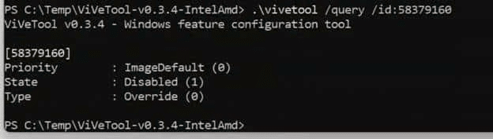
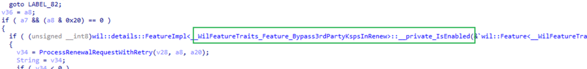
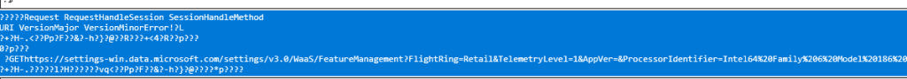
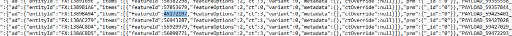
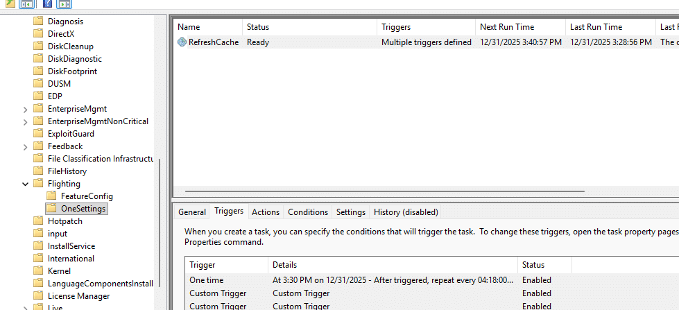
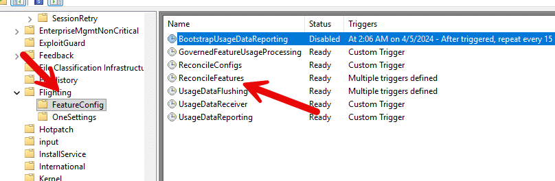
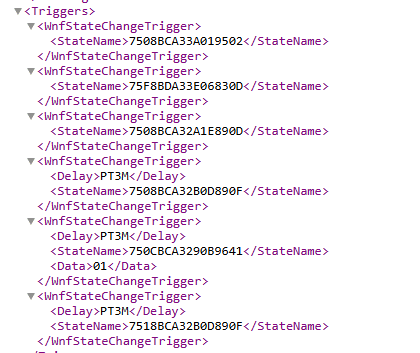
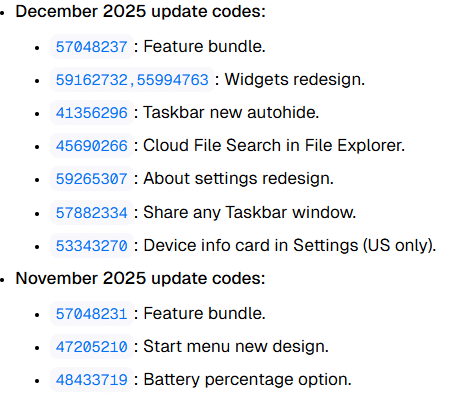
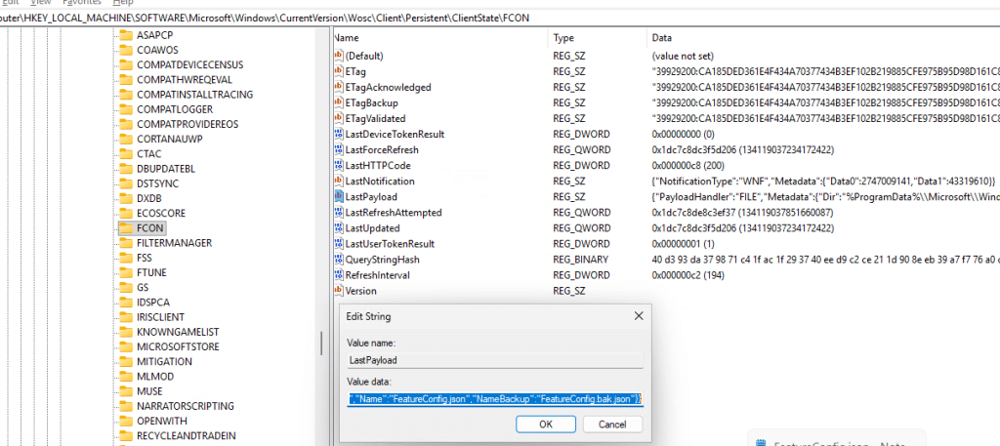
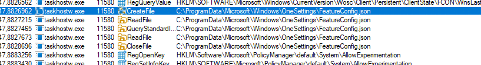

This blog explains what Controlled Feature Rollout (CFR) is, why Microsoft ships features in an off-by-default state, and how a device determines when a new capability or Windows hotfix is allowed to be activated. We will walk through the technical flow inside Windows, including the OneSettings refresh process, the FeatureConfig payload, and how the FeatureManagement registry ultimately decides which devices are switched on first.
Controlled Feature Rollout
Sometimes a Windows update installs new functionality or a feature onto a device, but nothing appears to change or improve. The updated binaries are there, the new logic is present in the DLLs, and technically, the feature should be working. Yet it remains inactive until Microsoft decides to turn it on. That behavior is intentional. It is part of Controlled Feature Rollout.
Instead of enabling new functionality immediately for every device, Microsoft ships the code first and activates it later in carefully measured waves/buckets. The feature is present but gated and only becomes active when the device receives an updated configuration that approves it for rollout.
Understanding that distinction matters because, from the outside, it can look like something is broken. Two devices on the same build may behave differently, even when running the same Windows version and build. That is exactly what surfaced during the certificate renewal investigation (KSP bug), where the fix already existed in the OS, but the rollout flag had not yet been enabled for those systems, forcing me to activate it manually with ViveTool.


That experience is what triggered this deeper dive into how Controlled Feature Rollout actually works behind the scenes.
Why Microsoft ships features in an off-by-default state
When Microsoft delivers a new feature or a servicing fix, the code is often shipped broadly as part of a cumulative or feature update but remains disabled by default. The logic sits behind a feature gate, such as the check that guarded the KSP renewal behavior. (ProcessRenewalRequestWithRetry is gated by the Feature_Bypass3rdpartyKspInrenew check.)


Shipping the code first ensures the binary payload is already present everywhere. Activating it later with the Controlled Feature Rollout allows Microsoft to control the impact. A rollout wave can begin with a small, targeted device population. Telemetry is monitored. Stability and behavioral signals are evaluated. If problems occur, the feature activation can be paused without issuing another OS update. If everything looks good, the rollout expands.
The important part is that activation is driven by configuration rather than code delivery. The code may already be in place, but a device does not enable it until it receives the rollout decision. That brings us to the onesettings platform that coordinates those decisions.
The role of FeatureConfig.json in a Controlled Feature Rollout
Windows receives rollout configuration through the OneSettings platform. Controlled Feature Rollout is one of the systems that sits on top of it. When Microsoft advances a rollout wave, the device does not download a new Windows Update. Instead, it retrieves an updated FeatureConfig payload from the OneSettings service endpoint: settings-win.data.microsoft.com


The logic that drives this lives in the wosc.dll and related components.

If you watch it with Procmon or ETW tracing, you will see that when the configuration is retrieved, Windows writes two files into: config.json and featureconfig.json.

FeatureConfig.json is one of the important ones here. It contains the feature identifiers, rollout state, device targeting attributes, flight identifiers, staged rollout metadata, and whether a feature should be enabled, disabled, or delayed on that specific system. Inside that payload is a JSON document containing feature identifiers, rollout state, targeting metadata, wave information, device attributes, and other evaluation rules.


Some Feature IDs (like 45172197) inside this file may look familiar. For example, the ShadowAdmin feature appears as one of the FIDs inside the payload. And that same data is mirrored into the registry under: HKLM\SYSTEM\CurrentControlSet\Control\FeatureManagement

Windows does not randomly flip these switches. Every decision is evaluated against device properties, rollout targeting, build compatibility, servicing conditions, and safety indicators. Some features are enabled automatically on newer builds where they are considered baseline.

Others remain staged until the Controlled Feature Rollout configuration explicitly allows activation. The configuration does not remain static. The device periodically refreshes it, and that refresh can be triggered in more than one way.
How the device refreshes the feature configuration
A device can update its Feature Configuration through scheduled refresh or through event-driven triggers. Both end up feeding the same evaluation logic, but they are initiated for different reasons. Scheduled refresh happens through the OneSettings RefreshCache task.


This Refresh Cache task periodically retrieves configuration from the service and writes a new FeatureConfig.json when changes are available.

Even if nothing else happens on the device, this mechanism ensures that rollout state eventually converges with what Microsoft intends. The second path is more dynamic and comes from the FeatureConfig ReconcileFeatures task.


Instead of being driven by a simple timer, this task reacts to Windows Notification Facility (WNF) state changes. The task definition contains multiple WNF triggers, including several that execute immediately and others that run after a short delay.


When one of these WNF states changes, Windows treats that event as a signal that the configuration context may have shifted and that the feature state needs to be re-evaluated. During testing, this behavior became very visible. We enabled the “get the latest updates as soon as there are available”

After enabling the “Get the latest updates as soon as they are available” policy, the ReconcileFeatures task executed almost instantly and downloaded a newer FeatureConfig version, even though RefreshCache had not yet run.

New rollout and the corresponding feature IDs appeared immediately in the registry and JSON payload.


In this case, it was ReconcileFeatures rather than RefreshCache that triggered the download. That makes sense when you look at what the reconciliation process is actually responsible for.
The role of WNF triggers in ReconcileFeatures
As mentioned before, the ReconcileFeatures task is not just a periodic scheduled task. It is also bound to multiple WNF state triggers.


The task XML includes WNF state change triggers such as:

WNF_SHEL_CDM_FEATURE_CONFIG_FIRST_USAGE
and several others related to configuration updates and feature usage signals. These WNF notifications do not contain the CFR data themselves. They act as signals that something changed and the system should reevaluate. When one of these states is raised, ReconcileFeatures runs and processes the FeatureConfig rules again.


This explains scenarios where feature behavior changes without an update being installed. The configuration changed and Windows re processed the rollout logic. It also explains why activating the “Get the latest updates as soon as they are available” policy can immediately trigger evaluation. That policy enables optional and preview content, sets rollout participation flags, and in practice caused ReconcileFeatures to run on my system and download a newer FeatureConfig payload.
What happens during Feature reconciliation
Once the configuration is refreshed, ReconcileFeatures does not simply flip feature toggles. It walks across several FeatureManagement registry paths, and it also looks at the staged and overrides structures.

Two important registry locations in this process are: FeatureManagement\Overrides and FeatureManagement\UsageSubscriptions

Overrides contain the feature state that has been explicitly forced or adjusted. This is also the place where tools like Mach2 or ViveTool write their values. The ReconcileFeatures task is designed to restore overrides and return feature state to what the rollout configuration intends. That is why Microsoft documentation calls this out in the context of Temporary Enterprise Feature Control. Even if an override is applied manually, the system may revert it when reconciliation runs, unless the override is treated as a higher-priority policy entry.
During this same pass the code also reads flight and usage metadata. Procmon traces clearly show lookups of flight IDs, reporting targets, rollout timestamps, and feature impression state. This information is used both for gating and for telemetry reporting. Only after this reconciliation pass does the device decide whether a given feature flag should be enabled or remain off.
Where GetCtacPropertyAlloc fits in
Inside fcon.dll there is a function named GetCtacPropertyAlloc. ReconcileFeatures and related components call it to fetch CTAC and rollout properties at runtime.
{kind=link}
Depending on the requested property name, it returns:
- “FeatureConfigs”
The full FeatureConfig payload as a string. This corresponds to the JSON that is written to disk. - “MxVersion”
The current configuration version. - “MxState”
The current rollout state for this device. - “IsMicrosoftAAD”
A simple yes or no value that tells FCON whether the device is in a Microsoft AAD context. This changes which rollout rules apply. - “TriggeredFlightIds”
The flights that have actually taken effect on the device.
This is the glue between the downloaded configuration, the registry structures, the evaluation logic, and the final feature enablement decision.
Windows Flighting Overview
With Microsoft having almost no documentation about this Controlled Feature Rollout flow.. I decided to combine it all in a high overview.
{kind=link}
Why can devices behave differently, even on the same build
From the outside, Controlled Feature Rollout can look inconsistent. Two devices install the same cumulative update and receive the same binaries, yet only one of them activates a new feature or hotfix. It feels random, but both systems are behaving exactly as designed.
The difference is not in the code but in the activation timing. Devices move through different rollout waves, belong to different targeting buckets, or process the reconciliation triggers at different moments. One machine may already have evaluated the latest FeatureConfig payload, while another is still waiting for its next evaluation window. The binaries exist on both, only the enablement decision differs.
That is exactly what happened in the KSP renewal investigation. The fix was already present on the device, but the rollout wave had not yet enabled it for that tenant. Manually toggling the feature flag with ViVeTool worked, but it effectively bypassed the intended CFR activation path. That moment made it clear that nothing was missing or broken. The feature was simply staged and waiting for its turn to be enabled. Which is what led to this deeper dive into how CFR actually flows through OneSettings, FeatureConfig, ReconcileFeatures, and the FeatureManagement registry.
The Store Has Flights Too
While investigating CFR, I noticed something interesting. Windows is not the only Microsoft component that can be remotely flighted… The Microsoft Store installation engine appears to have its own configuration and rollout mechanism.
{kind=link}
At the center of that process is the Store Install Service. This service is responsible for much more than simply downloading Store apps. This service essentially acts as a controlled pipeline for Store apps, making sure that apps are downloaded, staged, validated, installed, and provisioned in a reliable, managed, and remotely configurable way.
Instead of relying on traditional Windows Feature IDs, the Store retrieves a configuration payload from: /settings/v3.0/SCC/InstallService
The payload contains hundreds of remotely configurable settings that control how the Store installation pipeline behaves. Unlike CFR, where a feature is enabled or disabled through a Feature ID, these settings directly influence the behavior of the service itself.
{kind=link}
ID 61372494 Sote Flight Example
A good example of this was the Company Portal 0x87D1041C issue during Autopilot pre-provisioning. After the May Windows update, the updated InstallService.dll contained a new code path called FixInstallUnderSystemContext, linked to feature ID 61372494. But the code being present was not enough to explain the behavior. The important part was that the Store InstallService OneSettings payload also contained FIXINSTALLUNDERSYSTEMCONTEXT set to 1.
That changed the installation flow for Store apps started under LocalSystem. Instead of completing the expected system-context registration path during pre-provisioning, InstallService tried to move into a logged-on-user flow. During Autopilot pre-provisioning, that is exactly the wrong timing, because the actual user session does not exist yet. The package could already be staged under WindowsApps, but Company Portal was not registered in the state Intune expected, causing ESP to fail with 0x87D1041C.
When the InstallService configuration was later reverted, and FIXINSTALLUNDERSYSTEMCONTEXT changed back to 0, Company Portal started installing successfully again with the same Intune assignment and the same Autopilot configuration. That made it a perfect example of Store-side flighting: the code was already present in Windows, but the behavior was controlled by a remote OneSettings value.
Why Controlled Feature Rollout matters when troubleshooting
If a feature exists but does not appear to work yet, it is worth checking:
- Whether FeatureConfig.json has been updated
- Whether ReconcileFeatures has recently been evaluated
- Whether overrides are being reset
- Whether rollout participation policies are applied
- Whether the device is inside an enterprise-controlled rollout window
And if you want to be kept up to date about what Microsoft is activating in the background, check out the OneSettings Monitor on GitHub. It monitors the flights Microsoft is enabling remotely… which could be useful when something breaks out of a sudden…